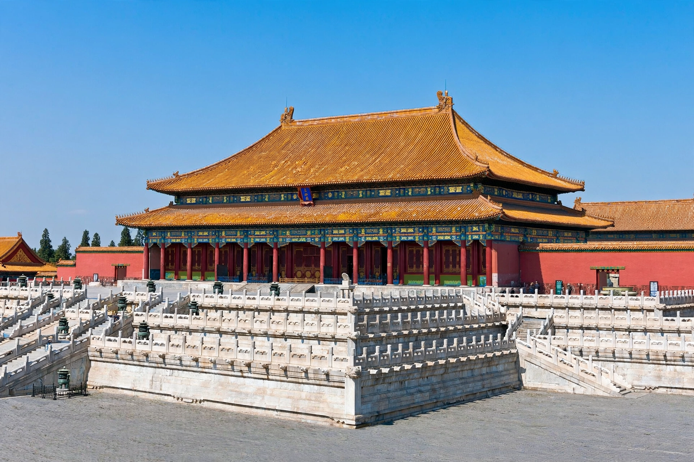

Forbidden City

| Location | Dongcheng District, Beijing, China |
|---|---|
| Built | 1406–1420, under the Yongle Emperor |
| Area | 72 hectares (180 acres); 980 surviving buildings |
| Function | Imperial palace of the Ming and Qing dynasties; now the Palace Museum |
| UNESCO | World Heritage Site since 1987 |
The Forbidden City (Chinese: 紫禁城, Zijin Cheng, "Purple Forbidden City") is a palace complex in central Beijing, China. It served as the home of Chinese emperors and the ceremonial and political centre of the Chinese government for almost 500 years, from the Ming dynasty (1420) to the end of the Qing dynasty in 1912. It now houses the Palace Museum and is one of China's most visited landmarks.
History
Construction began in 1406 under the Yongle Emperor, who moved the capital to Beijing, and took 14 years and a workforce said to number a million. Twenty-four emperors ruled from here — 14 Ming and 10 Qing. The last emperor, Puyi, abdicated in 1912 but lived in the Inner Court until his expulsion in 1924; the Palace Museum was established in 1925. During the Second Sino-Japanese War much of the collection was evacuated across China, and part was later taken to Taiwan, where it forms the National Palace Museum in Taipei.
Architecture
The rectangular complex, 961 by 753 metres, is surrounded by a 7.9-metre-wide moat and a 10-metre-high wall with watchtowers at the corners. Along a central north–south axis lie the Outer Court, with the great ceremonial Hall of Supreme Harmony raised on marble terraces, and the Inner Court, the residential quarters of the emperor and imperial family. Buildings follow strict feng shui and cosmological symbolism: yellow roof tiles, the imperial colour, cover nearly all roofs, and official accounts long claimed 9,999 rooms — one fewer than the palace of heaven. The complex is the largest preserved collection of wooden structures in the world.